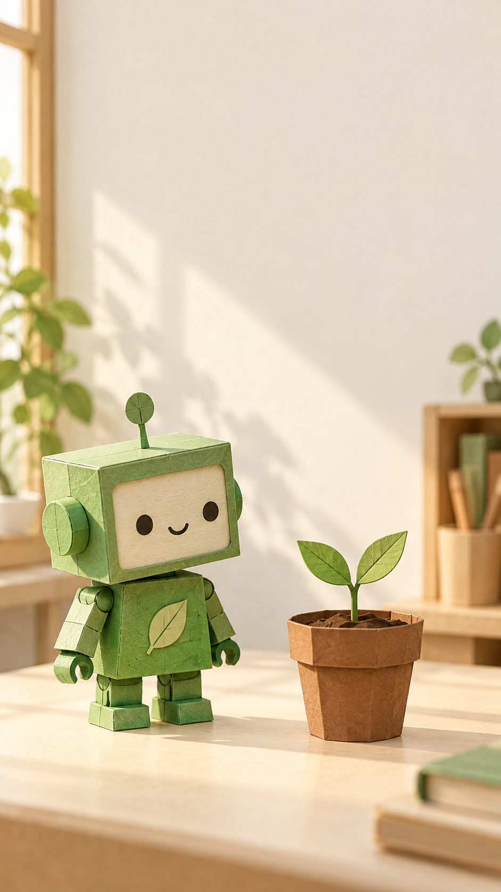

실습 5
촬영·스톡·AI로 장면 만들기
이 실습이 끝나면 내 손에 있는 것: 내 장면 원본·샷 MP4·출처와 생성 이력
2026년 10월 조사 기준 · 도윤·서진과 사례는 가상이에요.
이 장의 흐름
다른 실습으로 이동 · 전체 체크리스트
먼저 답부터
내 유형에 맞는 장면을 만들고, 파일로 저장해 Clipchamp에 가져오세요.
도윤 AI에 한 번 부탁하면 장면이 전부 나오나요?
서진 기준 그림과 한 동작씩 만든 샷을 편집기로 연결해요. 같은 외형인지도 봐요.
내 유형의 장면부터 만드세요
① 촬영형은 폰 촬영, ② 해설형은 스톡 또는 AI 이미지, ③ 생성형은 AI 영상 생성으로 가세요. 모두 마지막에 장면 원본과 권리 기록을 남겨요. 샷은 카메라가 끊기기 전까지의 한 화면이에요.
폰 촬영
① 폰으로 행동을 촬영해요
지금 하는 일
대본에 적은 물건·행동을 세로 화면에 담아요.
왜 하는지
설명한 행동이 실제 보이면 얼굴 없이도 전달할 수 있어요.
따라 하기
책상 정리 예는 어질러진 책상 → 종이 분류하는 손 → 정리된 책상을 준비해요. 필요한 장면 수는 내 장면표를 따르세요. 폰을 세로로 고정하고 카메라의 비디오 모드로 바꿔요. 설정에서 해상도와 프레임 수를 확인해요. 9:16은 세로 화면의 가로:세로 비율이에요.[Y079]
렌즈를 닦고 밝은 창 쪽에서 찍어요. 주요 물건을 누르거나 길게 눌러 초점·밝기 고정 기능을 찾아요. 앱마다 이름은 달라요. 손이 화면 밖으로 나가지 않게 시험 촬영하고 원본을 재생하세요.
아래 대본을 휴대폰 촬영 목록으로 바꿔 줘.
얼굴 없이 내 손과 종이만 촬영한다.
표: 읽을 말 / 찍을 행동 / 가까이 또는 넓게 / 초점 맞출 물건.
준비물과 동작이 바뀌는 지점만 나눠 줘.
대본: [실습 3에서 검수한 내 대본]촬영 파일은 originals에 보관하고 편집에 쓸 사본을 scenes에 넣으세요. 원본의 사람 얼굴·개인 문서·상표가 찍히지 않았는지 봐요.
이렇게 보이면 성공
내 말과 대응하는 촬영 원본이 있고 손·물건에 초점이 맞아요.
이렇게 보이면?
가로 촬영을 확대하면 양옆이 잘려요. 중요한 행동이 사라지면 세로로 다시 찍거나 화면에 맞게 배치하세요.
스톡과 권리
② 스톡 영상·이미지와 권리 메모를 모아요
지금 하는 일
직접 촬영 대신 설명에 맞는 허용 소재를 찾아요.
왜 하는지
무료 다운로드와 모든 용도의 사용 허락은 같지 않아요.
따라 하기
Pexels 또는 Pixabay에서 장면표의 행동을 검색하고 원본을 다운로드하세요. 무료 사용·수정을 안내하지만 원본 재판매·단독 재배포와 인물·상표에는 추가 조건이 있어요.[Y018][Y019]
내 장면표에서 스톡으로 구할 장면의 검색어만 제안해 줘.
한국어/영어 검색어와 화면에 꼭 보여야 할 행동을 표로 써 줘.
인물 얼굴·상표·글자 있는 화면은 피하고 싶어.
자료의 사용 허락을 추측하지 마.
장면표: [내 장면표]예: 「책상 종이 정리 / organizing papers desk」로 찾아 내 설명과 맞는 장면만 골라요. 파일마다 아래 메모와 공식 라이선스 페이지의 사본을 rights에 보관하세요.
파일명:
원작자·원문 주소:
다운로드·확인 날짜:
허용 용도·금지 사항:
인물·상표 추가 확인:
필요한 표시문구:
증빙 파일명:사람 얼굴이나 상표가 핵심이라면 동의·추가 권리를 확인하세요. 해결이 안 되면 사람·상표 없는 소재 또는 본인 물건으로 바꾸세요.[Y018][Y019]
이렇게 보이면 성공
각 장면 파일과 대응하는 출처·이용 조건·증빙 파일이 있어요.
이렇게 보이면?
검색 썸네일만 저장하지 마세요. 파일의 원문 페이지를 열고 다운로드·조건 확인을 마치세요.
AI 이미지
② AI 이미지를 만들고 움직임을 줘요
지금 하는 일
ChatGPT에서 기준 그림을 만들고 편집기로 넘겨요.
왜 하는지
글자 없는 장면을 만든 뒤 제목·자막을 편집해야 글을 고치기 쉬워요.
따라 하기
ChatGPT의 새 대화에 아래 프롬프트를 붙이고 이미지 만들기를 요청하세요. 비율 선택기가 보이면 9:16을 고르세요. 결과를 열어 저장 / Save로 PNG/JPG를 다운로드하고 scenes/reference.png로 보관해요. 실제 파일 치수도 확인해요.[Y374]
앱이 업데이트되면 버튼 이름이나 위치가 조금 다를 수 있어요. 최신 앱 화면에서 비슷한 이름의 버튼을 찾아 주세요. 못 찾겠으면 공식 도움말을 확인하세요.
세로 9:16 쇼츠의 기준 이미지.
작은 초록색 종이 로봇이 크림색 책상 왼쪽, 작은 갈색 화분이 오른쪽.
눈높이 미디엄 샷. 왼쪽 창의 부드러운 아침빛.
초록·크림·갈색의 종이 공예 삽화. 위쪽에 제목을 넣을 빈 공간.
글자·숫자·로고·실존 인물·실제 제품 복제품은 넣지 말아 줘.
Use case: illustration-story. Create a vertical 9:16 reference illustration for a beginner video-making textbook. A small green paper robot stands on the left side of a cream desk; a small plain brown flowerpot with one green sprout stands on the right. Eye-level medium shot, soft morning window light from left. Handmade folded-paper craft texture. Green, cream and brown palette. Leave the top quarter mostly empty for an editor to add a heading later. Everything fictional and original. No text, numbers, logos, brands or real people. One single scene, no panels.위 한국어 프롬프트는 독자용 요청, 영어 프롬프트는 이 예시에 실제 사용한 요청이에요. 좋은 결과는 로봇·화분 형태가 분명하고 제목 공간이 있어요. 결과에 배경 소품이 늘어났다면 필요한 공간을 해치지 않는지 확인해요.
첨부한 기준 그림의 로봇 머리·초록색·화분·빛 방향은 유지해 줘.
이번 장면은 같은 책상에서 화분을 가까이 보여 줘.
글자 없이 같은 종이 공예 스타일로 수정해 줘.다음 장면을 만들 때 승인한 이미지를 다시 첨부하세요. 같은 설명만 반복하는 것보다 기준 그림과 유지할 요소를 함께 줘요. 저장 후 외형·빛을 나란히 비교하세요.[Y369][Y374]
Clipchamp에서 이미지를 가져와 음성 길이에 맞게 늘려요. 클립을 선택하고 필터 / 효과 / 모션 중 느린 확대가 제공되는 기능을 찾아 적용해요. 무료 항목이 없으면 같은 이미지를 나눠 첫 부분은 전체, 뒤는 조금 확대한 크롭으로 연결하세요. 이것은 AI 이미지에 준 편집 움직임이에요. 새 동작을 생성한 AI 영상과 구분해요.[Y334][Y394]
이렇게 보이면 성공
PNG/JPG 원본과 사용 프롬프트가 있고, 편집기에서 음성에 맞춰 보이거나 움직여요.
이렇게 보이면?
무료 이미지 한도가 막히면 내 사진·스톡·직접 그린 도형으로 완성해요. 이미지에 생긴 엉뚱한 글자는 그대로 쓰지 마세요.
AI 영상 생성
③ Flow 또는 Runway로 짧은 영상을 생성해요
지금 하는 일
기준 이미지에 한 가지 동작을 더해 MP4를 받아요.
왜 하는지
모델 이름만 알아서는 실제 가입·생성 경로를 찾기 어려워요.
따라 하기
AI 생성형은 로봇 네 샷 장면표를 그대로 이어 만들어요. 실습 4의 음성과 같은 이야기예요. reference.png와 shot-01.mp4~shot-04.mp4를 준비하세요.
| 서비스 | 한국·무료 조건 | 생성 전 확인 |
|---|---|---|
| Google Flow | 한국·한국어 지원, 성인 이용 조건. 공식 크레딧 안내는 비구독자 하루 50크레딧, 시작 도움말은 구독 요구로 설명이 달라요.[Y342][Y343][Y382] | 내 계정에서 생성 접근·모델·잔여량을 확인해요. Veo 3.1 Fast 비Ultra는 생성당 20크레딧이에요.[Y343] |
| Runway | 무료는 최초 125크레딧·갱신 없음·영상 워터마크. 한국 계정 실행은 가입 화면에서 확인하세요.[Y347][Y383] | 무료에서 허용된 Image to Video 모델을 골라요. 유료 Gen4.5 사양을 무료에 옮기지 마세요.[Y384] |
| YouTube Create | 일반 편집은 한국 지원, Omni 영상 생성의 명시 제공국에 한국이 없어요.[Y378] | 한국 기본 생성 경로로 쓰지 않아요. |
크레딧은 생성 요청에 쓰는 서비스 잔여량이에요. Flow를 열고 새 프로젝트 → Frames to Video / Ingredients to Video처럼 참조 이미지를 넣는 모드를 찾아요. 기준 이미지를 올리고 아래 요청을 입력해요. 모델 → 비율 9:16 → 지원 길이 → 출력 수 → 차감 크레딧을 생성 전에 확인하세요.[Y367]
영상 프롬프트 공식은 피사체 + 한 동작 + 장소 + 샷 크기 + 카메라 움직임 + 조명 + 스타일 + 길이예요. 길이는 글뿐 아니라 설정에서도 골라요. 「8초」를 요청했다면 선택 모델이 지원하는지 먼저 보세요.[Y349][Y364]
Use the attached image as the visual reference.
A small green paper robot gently tilts its head toward the brown flowerpot once.
Eye-level medium shot. The camera slowly pushes in.
Soft morning window light, cream desk, green and brown paper textures.
Preserve the robot shape and colors from the reference.
Audio, if supported: quiet room tone and a soft paper rustle.해석: 초록 로봇이 화분 쪽으로 한 번 고개를 기울여요. 눈높이 중간 크기 화면, 카메라는 천천히 가까워져요. 아침빛과 종이 질감을 유지해요. 소리 미지원 모델에서는 소리 요청을 빼고 실습 4 음성을 넣어요.
생성을 누른 뒤 형태·움직임·소리를 재생해 골라요. 결과의 다운로드 / Download로 scenes/shot-02.mp4를 저장해요. 프롬프트·모델·비율·길이·생성일·크레딧과 조건 화면을 기록하세요.[Y367]
Runway 대안: 새 영상 세션 → Image to Video에서 같은 이미지를 올리고 아래처럼 움직임만 짧게 적어요. 비율과 지원 길이는 화면에서 별도로 고르세요. 무료 모델이 잠겨 있으면 생성을 멈추고 사진 모션으로 전환해요.[Y349][Y383]
The robot gently tilts its head once toward the flowerpot.
Slow push-in. Soft morning light. Paper craft texture.위 고개 기울이기 요청은 샷 02예요. 샷 01은 바라보기, 샷 03은 로봇을 멈추고 새싹에 카메라만 접근, 샷 04는 몸을 바로 세우기로 동작 문장만 바꿔요. 파일 번호대로 저장하고 같은 해설과 대조하세요.
| 샷·파일 | 유지할 것 | 바꿀 한 동작 |
|---|---|---|
| 01 · shot-01.mp4 | 같은 기준 이미지·로봇·두 잎 새싹·갈색 화분·아침빛 | 로봇이 두 잎 새싹의 화분을 바라봄 |
| 02 · shot-02.mp4 | 같은 기준 이미지·로봇·두 잎 새싹·갈색 화분·아침빛 | 같은 로봇이 한 번 고개를 기울임 |
| 03 · shot-03.mp4 | 같은 기준 이미지·로봇·두 잎 새싹·갈색 화분·아침빛 | 새싹 가까이, 카메라만 천천히 접근 |
| 04 · shot-04.mp4 | 같은 기준 이미지·로봇·두 잎 새싹·갈색 화분·아침빛 | 전체 화면에서 로봇이 천천히 바로 섬 |
가상 연출 예예요. 다음 클립도 같은 기준 이미지를 넣고 한 동작만 바꿔요. 지원 모델에서만 마지막 프레임을 다음 시작 참조로 써요. 머리 모양·화분 위치·빛 방향이 이어지는지 비교하고, 어긋나면 한 요소씩 수정해요.[Y349][Y367]
좋은 요청은 한 동작·한 카메라 움직임이에요. 나쁜 요청은 「뛰고 춤추고 장소가 바뀌고 여러 인물이 대화」를 한 샷에 넣는 거예요. 생성 클립이 해설보다 짧으면 설명용 이미지·도형을 더해요. 같은 클립을 억지로 반복해 길이만 채우지 마세요.
이렇게 보이면 성공
재생 가능한 샷 MP4와 생성 이력, 다음 샷에 쓸 기준 이미지가 있어요.
이렇게 보이면?
한국에서 메뉴가 없거나 무료 크레딧이 부족하면 결제 없이 ②의 AI 이미지 모션·본인 촬영으로 완성하세요. 정지 이미지를 생성 영상이라고 소개하지 마세요.
자동화·무료 대안: shorts-kit
키트는 AI 장면을 생성하지 않아요. 내 사진·클립을 input/scenes/01.mp4, 02.jpg처럼 파일명 순서로 넣어요. 장면 수는 script.json의 scenes 개수와 같게 해요. 그 수만큼 실제 파일을 준비하세요. 아래는 config의 해당 항목만 바꾸는 예예요.
video:
scenes_dir: input/scenes
rights:
scenes: 파일별 출처와 조건은 input/scene-rights.txt에 기록짧은 클립은 해당 장면 끝까지 반복되고 가운데가 잘려요. 원본 클립 소리는 키트가 사용하지 않아요. 필요한 해설은 narration으로 따로 넣으세요. 재출력에서 크롭·반복 구간을 확인해요.
자주 묻는 질문 5개
다음 실습
지금 만든 결과물을 개인 폴더에 저장하고 다음 단계로 가세요.